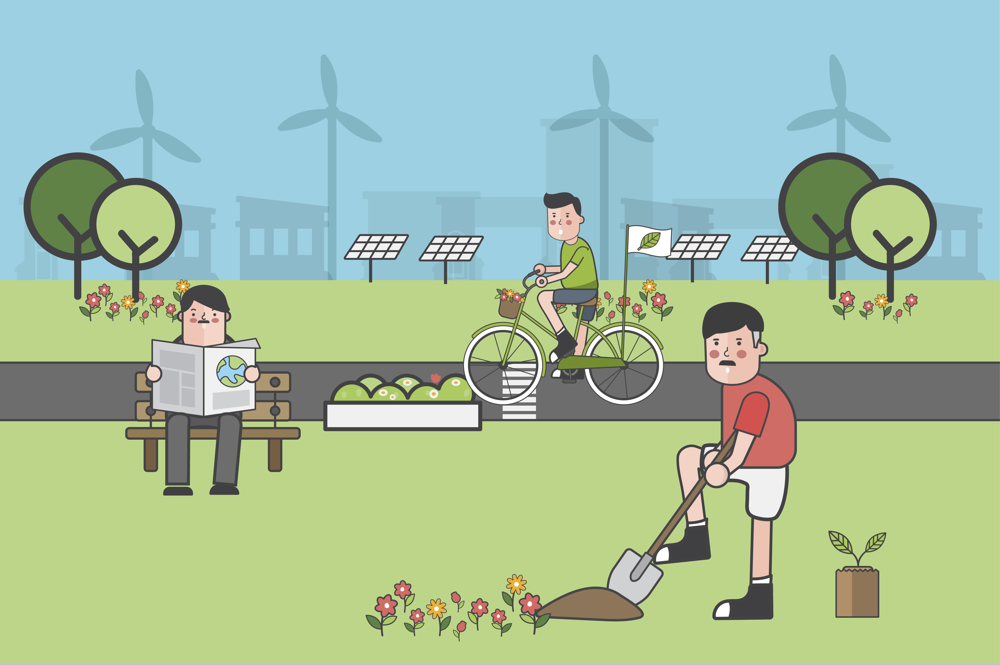

Why your suggestions matter?
Park is not only for a specific people it is created with the purpose of a place to relax when you are overstimulate with modern society. It is really important to get all of your suggestions since it is the only thing that could help revitalize the park.
Submit your ideas

What can you suggest?
You can report the weak factors of the park like broken facilities, broken benches or the lack of bins. You may also give ideas for improving the parks, and you may give your opinions and feedback in this website freely without having any trouble.
Submit your ideas